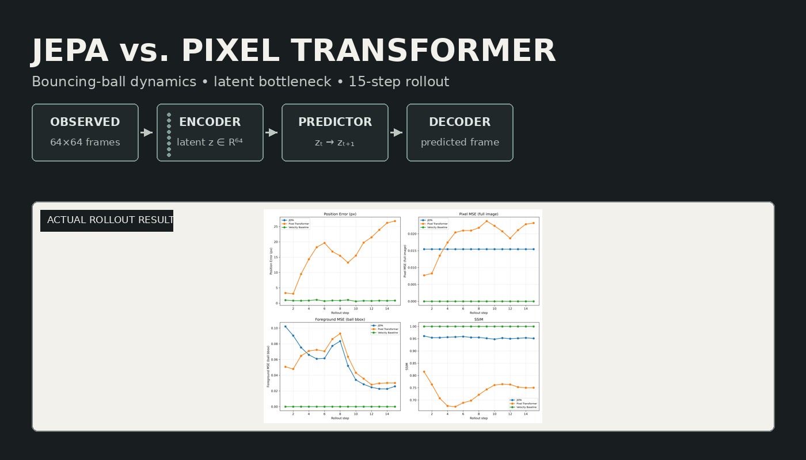
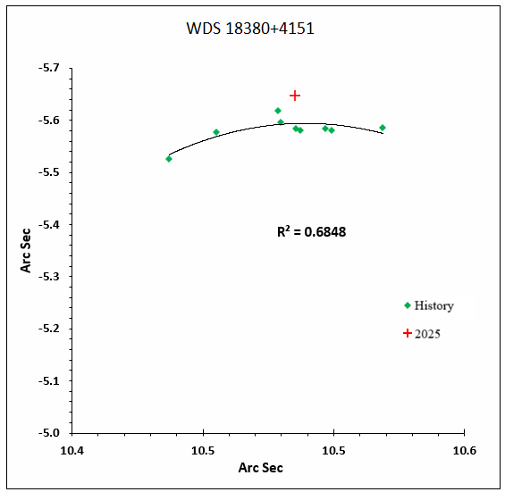

About
I studied physics as an undergraduate, moved into data science, and now work at the intersection of both. The underlying question has remained constant: how do systems, physical or learned, represent state, evolve through dynamics, and respond when we perturb them?
Physics gave me a language for talking about state variables, governing equations, and the role of modeling assumptions. Engineering taught me to build systems that work at scale and test what breaks. My current research combines these perspectives through the lens of world models and machine learning.
I believe in small, controlled experiments. Formulate a precise question. Build the simplest system that tests it. Observe where it succeeds and where it fails. That approach has guided my work in latent dynamics, intervention, and the challenge of learning coherent representations from high-dimensional data.
Research Interests
Selected Work
What a Model Must Discard to Learn Physics

A comparison of two approaches to predicting the next frame of a bouncing-ball collision: a pixel-space Transformer that predicts with no bottleneck, and a JEPA-style model that compresses into a 64-dimensional latent state before predicting.
The pixel model achieved a loss three orders of magnitude lower on one-step prediction, yet it had learned almost nothing about the dynamics. The latent model's higher loss came from a bottleneck that forced it to compress all information through a narrow channel, leaving only what mattered for predicting the next state.
The experiment investigates interpretation through intervention: by directly editing the latent state mid-rollout and observing whether the model continues coherently from the new position. This provides evidence that the model has built a manipulable representation of state, not merely memorized a trajectory.
Read the full write-up →Astrometric Study of WDS 18380+4151

Ten CCD observations of a visual binary system using the Great Basin Observatory, combined with historical measurements and Gaia DR3 astrometry. The analysis examines whether the system is physically associated or an optical alignment.
The available observations remain insufficient for a definitive conclusion, illustrating the role of continued measurement in resolving astronomical systems and the practice of scientific uncertainty.
Read the paper (PDF) →Time-Series Photometry of a Variable Star
Multi-band B, V, and I photometry used to construct light curves and phase-resolved colour-magnitude diagrams, examining the behaviour of a pulsating star across its variability cycle.
Background
-
Fabric Data EngineerMastech Digital, BengaluruBuilding production data and analytics systems using Microsoft Fabric. Work spans data engineering, pipeline automation, and modern cloud data architecture.
-
Data EngineerTata Communications, ChennaiBuilt and maintained data platforms and ML systems in production. Worked with large-scale data infrastructure, model deployment, and analytics pipelines.
-
M.Sc. Data ScienceSRM University · CGPA 9.05/10Advanced training in machine learning, statistical modeling, data analysis, and computational methods. Thesis on applied machine learning systems.
-
B.Sc. PhysicsThe American College, Madurai · CGPA 8.15/10Classical mechanics, quantum mechanics, statistical mechanics, electromagnetism, and mathematical methods. Foundation for later work in scientific machine learning.